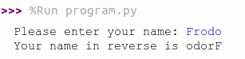

x = 123 # a variable x that contains the integer value 123
x = x + 1 # x is updated with the value of x + 1, becoming 124...
hello = "Hello World!" # a variable that contains the string "Hello World!"
is_done = True # a variable is_done with the logic value True01-19-24 (Friday)
From the lectionary reading, Psalm 62:5-12
5 Yes, my soul, find rest in God; my hope comes from him. 6 Truly he is my rock and my salvation; he is my fortress, I will not be shaken. 7 My salvation and my honor depend on God[a]; he is my mighty rock, my refuge. 8 Trust in him at all times, you people; pour out your hearts to him, for God is our refuge. 9 Surely the lowborn are but a breath, the highborn are but a lie. If weighed on a balance, they are nothing; together they are only a breath. 10 Do not trust in extortion or put vain hope in stolen goods; though your riches increase, do not set your heart on them. 11 One thing God has spoken, two things I have heard: “Power belongs to you, God, 12 and with you, Lord, is unfailing love”; and, “You reward everyone according to what they have done.”
1 Announcements
- Attention to homework assignments - individual, check deadlines
- See if Perusall is working
2 Objects and Variables
- Python syntax specifies some ways to represent different types of data. A data representation in Python is called an “object”.
| Type | Object type in Python | Example |
|---|---|---|
| Integer number | int |
123 |
| Decimal number (floating point) | float |
3.14 |
| Logic value | bool |
True, False |
| Text | string |
"Hello World!" |
2.1 Variables
- Variables are names we set to refer to objects.
- A not-so-good metaphor: variables are containers for objects
- A better metaphor: objects are houses, variables are addresses of these houses
2.2 Objects x variables
- It is very important to differentiate!
- Which of the following are variables and which are objects?
"hello"
hello
132
var_1
truev
True2.3 Variable naming conventions in Python
- They MUST start with a letter or with _ (underline)
- They are case sensitive (‘C’ is different from ‘c’)
- They can’t contain:
{ ( + - * / \ ; . , ? - They can’t have names of words already reserved for other purposes in Python:

- What happens if?
True = 123"Hello" = world1stcar = 20003 Input/Output
- Programming is nothing without the design of an interface!
- I have to be able to input data in the program, and
- I have to be able to get results (output) from the program.
3.1 Graphical input/output
- Also called Graphical User Interface (GUI) - we’ll study it in Unit 10
- Kind of mimics the way we use mechanical input and output
- Traditionally, WIMP (Windows, Icons, Menus and Pointers)
3.2 Text input/output
- Even simpler, however, it is a good start for programming!
name = input("Please enter your name:")
reverse = name[::-1]
print("Your name in reverse is", reverse)The command-line interface will ask for input from our keyboard, and then:

3.3 Python text output: print()
- Put what you want to print between the parentheses:
print("Hello World") - If you want to jump to a new line, use
\n:print("Hello\nWorld") - You can also pass multiple arguments by separating them with commas:
print("x has the value:", x, "\nand y has the value:", y)
3.4 Python text input: input()
- The command waits until the user types some text in the command-line interface and finishes with ENTER
- The term
input()“turns” into the text entered, and is ALWAYS an object the typestring! - Thus, it needs to be saved into a variable:
x = input()- After the user types “Hi”, for example, it is as if:
x = "Hi"
- After the user types “Hi”, for example, it is as if:
- You can customize an input message by passing a string:
x = input("Please enter your name: ")3.5 Input of numeric values
- Now, suppose we want to calculate the sum of two numbers:
x = input("Please enter first number: ")
y = input("Please enter second number: ")
z = x + y
print("The sum is", z)What happened???
3.6 Converting string to number types
- You can convert a string to a number using the methods
int()andfloat()- The string that goes inside the parentheses (which we call the “argument” of the method) will be turned to an integer/float
xstring = input("Please enter your age: ")
x = int(xstring)
print("Your age is ", x)- Just make things shorter by chaining one method into another!
x = int(input("Please enter your age: "))
print("Your age is ", x)4 Running Python
Try:
- Saving some previous code as
program.py - Open a command-line interface in your computer and run:
python3 program.py- You need to have python3 installed in your machine
- You need to be in the directory of the file
program.py
Python can be run in two modes:
4.0.1 Script / Program
- All lines of code executed without stop
- Run in command-line as
python3 program.py - Only print what is specifically passed through
print()
4.0.2 Interactive shell
- Run lines of code each at a time, as user enters them
- Open in command-line just by typing
python3 - Typing an expression without being assigned to a variable will “print” the result
4.1 Integrated Development Environment (IDE)
- In our classes, we will be using Thonny
- Notice the panels for scripting and for interactive shell
- There is also a helper and variable explorer for debugging code
5 Activity: practicing with Thonny
Try practicing running some programs as script and as interactive shell.
Try running the debug tool to see your code executing step by step
Check all the panels and how they can be useful for you
Reflection: How do you feel working with these interfaces? Would a graphical interface be better?